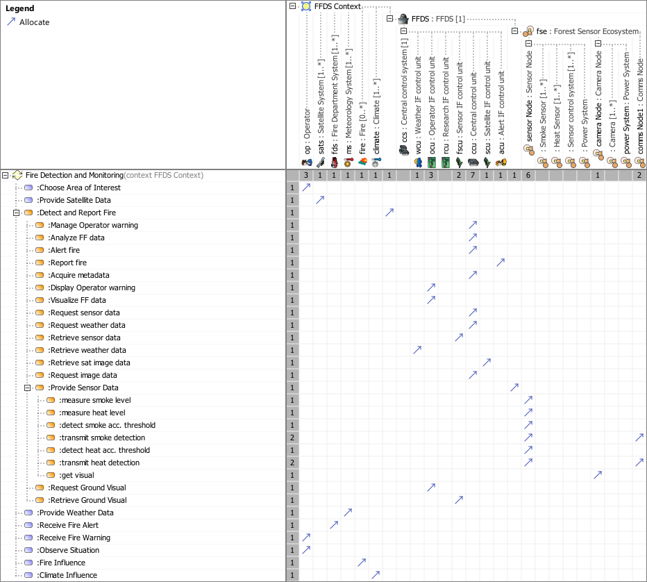

L8_LFUM Logical Functional Mapping Viewpoint
| Domain | Aspect | Maturity |
|---|---|---|
| Logical | Traceability & Mapping |

The Logical Functional Mapping Viewpoint supports the definition of assignment of system functions and system partial functions to logical system elements.
The Logical Functional Mapping Viewpoint supports the “System Architecture Definition Process” activities of the INCOSE SYSTEMS ENGINEERING HANDBOOK 2023 [§2.3.5.4] and contributes to the artifact “Traceability Mapping”.
Furthermore, the Logical Functional Mapping Viewpoint supports the “Allocation and Partitioning of Functional Entities to Logical Entities” activities.
A FBS to LBS mapping matrix featuring
The following Stereotypes / Model Elements are used in the Viewpoint: